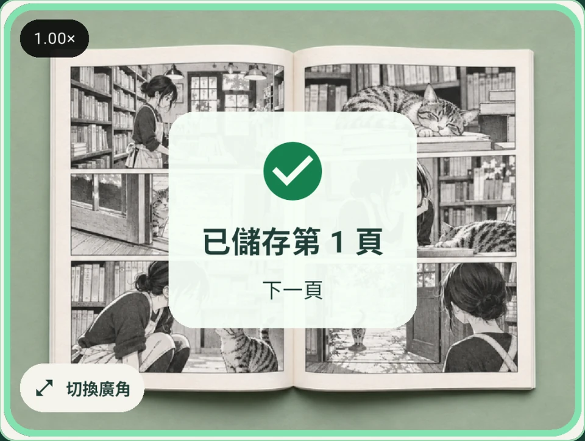
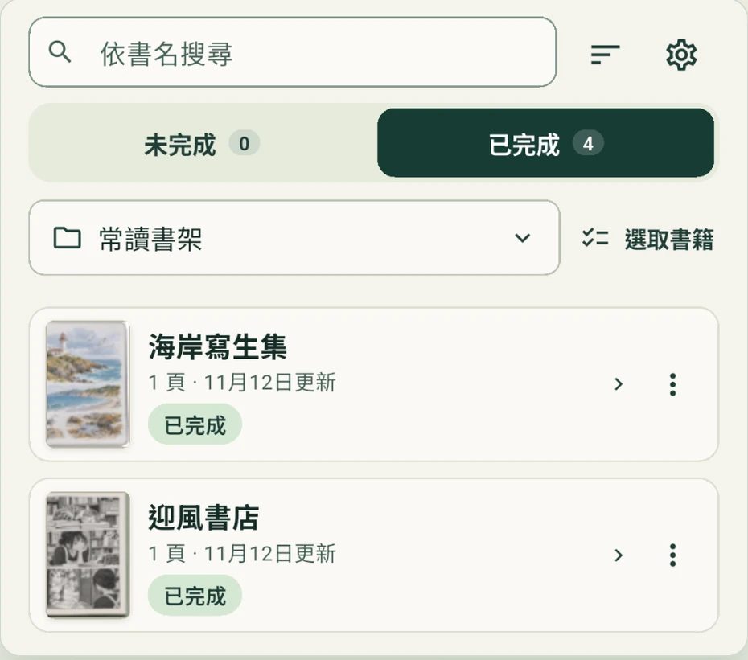

翻動書頁，自動拍攝。
-
讓書本進入取景框
讓書本的四個角都出現在畫面裡，再啟動自動拍攝。
-
翻到下一頁
看到儲存成功的勾號後，翻到下一頁。
-

自動拍攝並儲存
書頁穩定後，App 會自動拍攝，並以勾號顯示已成功儲存。
掃描後，批次整理紙面。
裁去紙頁周圍的多餘區域、將紙頁外的背景調白，或加深文字與線條。選好的調整可一次套用到多個頁面。



拍好的書，
想讀就能打開。
- 在手機上直接閱讀左右滑動翻頁，用雙指放大小字。可選擇由右往左或由左往右閱讀。
- 依書名或資料夾找書掃描中的書會留在未完成清單，已完成的書可以放進資料夾整理。
- 匯出為 PDF 或 CBZ 將整本書存成一個檔案，就能用平常使用且支援該格式的閱讀器開啟。
常見問題
需要拆開書本嗎？
只要把書攤開，用手機相機拍攝。左右兩頁可以合在一張圖片裡儲存。
拍攝的圖片儲存在哪裡？
圖片儲存在裝置上，調整也在裝置上完成。如果想在其他裝置上閱讀，可以匯出為 PDF 或 CBZ 後再傳過去。
可以掃描哪些書？
可以掃描紙本書、漫畫和雜誌等印刷品的頁面。